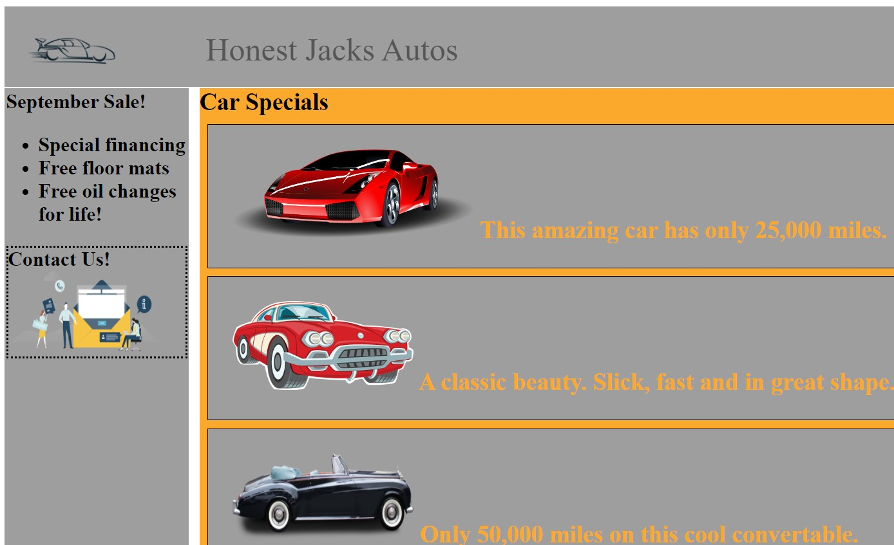
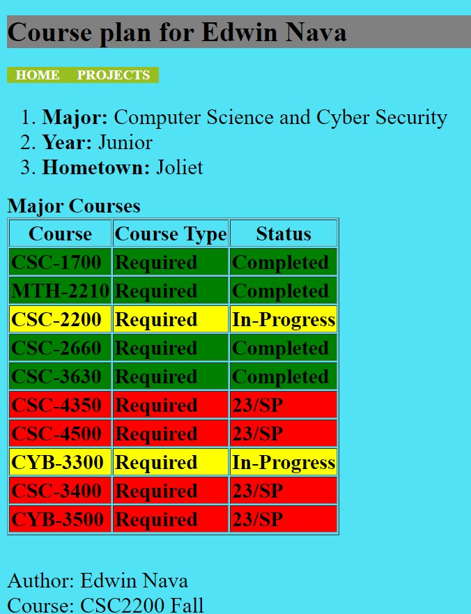

I'm a Systems Administrator at ALDI USA with 3+ years of experience managing a mobile device fleet of 15,000+ devices across every ALDI USA location using Ivanti Neurons MDM and Apple Business Manager. I hold a B.S. in Computer Science and Cybersecurity from Aurora University.
Alongside my day-to-day work, I build hands-on cloud security labs with Microsoft Sentinel, KQL detection engineering, Microsoft Entra ID, and Tenable Nessus, and I've earned my CompTIA Security+ and Microsoft SC-200 certifications along the way. I'm looking to bring this foundation into a cybersecurity-focused role.
Consistently met productivity and accuracy targets while demonstrating reliability in a fast-paced, high-volume environment.
Aurora, IL
Built and expanded a cloud-based SOC in Microsoft Sentinel integrated with Microsoft Entra ID. Developed three KQL detection rules covering brute force (T1110), impossible travel (T1078/T1550), and privilege escalation (T1078.004); automated attack simulation with a PowerShell script using the Microsoft Graph API to validate detections programmatically; and built a SOC dashboard with Sentinel Workbooks.
View Project on GitHubCaptured and analyzed network traffic in Wireshark within an isolated VMware lab to detect ARP spoofing (man-in-the-middle) and TCP SYN port scanning, mapped to MITRE ATT&CK techniques T1557 and T1046.
View Project on GitHubRan credentialed and uncredentialed Tenable Nessus scans in an isolated VMware lab, prioritized findings by CVSS, VPR, and EPSS, then remediated and rescan-verified fixes — cutting Critical and High findings on a Windows 11 host from 69 to 0.
View Project on GitHubDeveloped a web-based tool aligned with NIST 800-171 that helps organizations identify security control gaps and prioritize remediation.

A webpage showcasing cars with images and text, built with HTML and CSS positioning.

A website tracking the courses I completed and planned for my Computer Science degree.